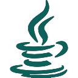

Carmen Sirgo López
¡Hola! Soy Carmen Sirgo López, graduada de Ingeniería Infomática de Software y del Máster de Ingeniería Web. Este es mi portfolio, donde podrás encontrar información sobre mí y mis proyectos.
¡Hola! Soy Carmen Sirgo López, graduada de Ingeniería Infomática de Software y del Máster de Ingeniería Web. Este es mi portfolio, donde podrás encontrar información sobre mí y mis proyectos.
Comencé el grado de Ingeniería Informática de Software en la Universidad de Oviedo en 2017 y finalicé en Febrero de 2022 con una nota media de 8,52.
Tras finalizar el grado, comencé el Máster en Ingeniería Web en 2022, también en la Universidad de Oviedo, y finalicé en Julio de 2024 con una nota media de 9,13.
Se trata de un videojuego de gestión de granja que hice como Trabajo de Fin de Grado. Ha sido desarrollado con Unreal Engine 4, tanto en Blueprints como en C++ y con assets de creación propia.
Es una plataforma de minijuegos multijugador para dos jugadores. Ha sido desarrollado JavaScript y Websockets, además de HTML5 y CSS. Los recursos gráficos también son de creación propia.
En 2021 hice mis práctica de empresa en el Grupo Mentaformación Siglo XXI, donde desarollé una página web con Wordpress. Fue un proyecto full stack, donde hice tanto parte del front como del back, creé plugins en PHP y gestioné la base de datos.
En 2024 comencé mis práctica del máster en Hiberus, donde estuve trabajando principalmente con Java para la web de un periódico. Ahora me encuentro en el departamento de microservicios, donde trabajo con Java, Spring Boot, Jenkins y OpenShift.
Java
 Python
Python
 HTML5
HTML5
 CSS3
CSS3
SQL
JavaScript
C#
 C++
C++
Go
PHP
Spring
Tailwind
 React
React
CakePHP
Git
 Wordpress
Wordpress
 Photoshop
Photoshop
 Arduino
Arduino
UE4
 Unity
Unity
Docker
Nativo
 B2-First
B2-First
 Básico
Básico
Experiencia